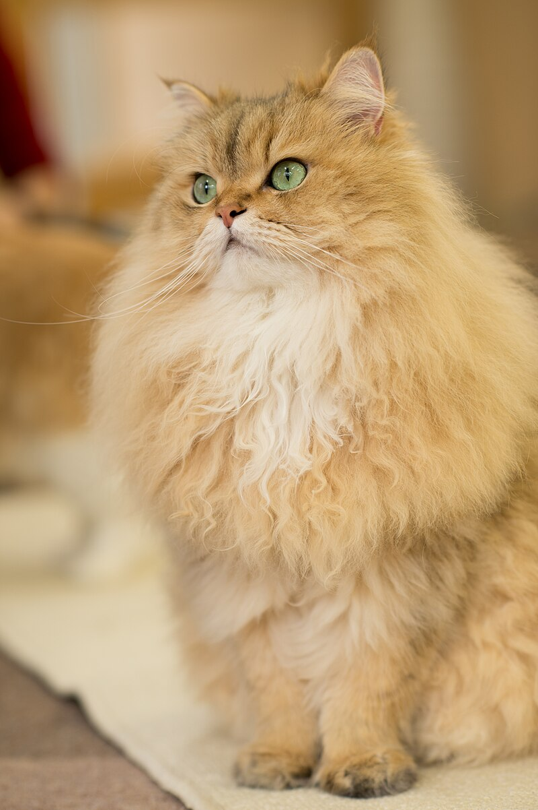

Gatitos Suaves.
Conoce a los diferentes tipos de gatitos que existen. Razas, colores, comportamientoas, juguetes, gatitos famosos, juegos recomendados.
El gatito doméstico es unacompañante fiel que se comunica a través de vocalizaciones. Las más populares son su característico maullido y el ronroneo. Son animalitos de gran inteligencia y caracter. Como resultado de mutaciones genéticas, cruzamiento y selección artificial, hay numerosas razas.
Siamés
El siamés es una raza de gato que se distingue en dos variedades: por un lado el siamés moderno, y por otro el siamés tradicional o Thai. Deriva del Siamés tradicional, una de las diversas variedades de gatos nativos de Tailandia, el siamés original se convirtió en una de las razas más populares en Europa y Norteamérica en el siglo xix. El siamés moderno, más refinado y de rasgos más extremos, se caracteriza por unos ojos azules almendrados, una cabeza triangular, orejas grandes, un cuerpo alargado, esbelto y musculoso, y varias formas de coloración de puntos.

Gato Persa
El persa es una raza de gato caracterizada por tener una cara ancha y plana y un gran abundante pelaje de variados colores. Los primeros gatos persas fueron introducidos en Italia desde Persia en la década de 1620 y a sus descendientes se les llamó de muchas maneras.
